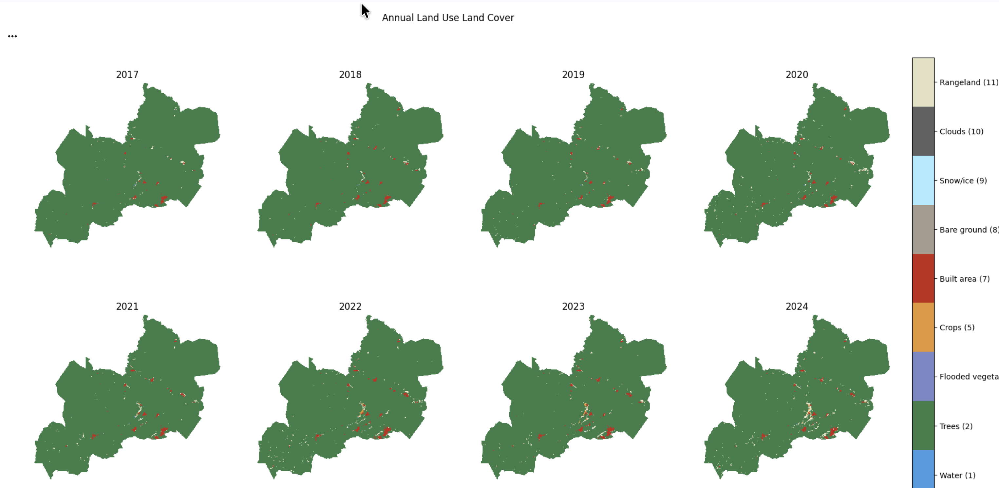
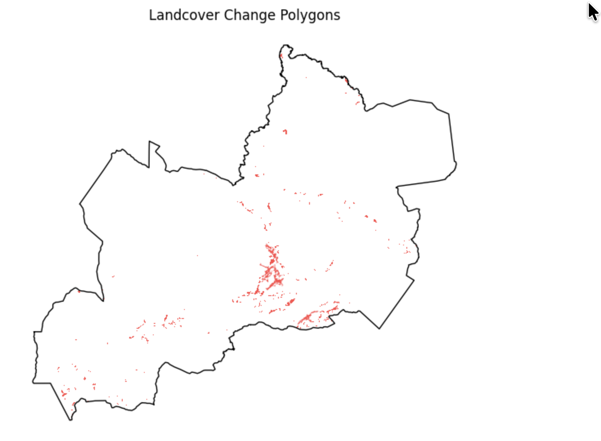

Project objective
Assess potential post-2020 tree-cover change in Juaboso District, Western North Region, Ghana. The analysis identifies locations classified as Trees in 2020 and non-Trees in 2024, then summarises the resulting land-cover-classification-based transitions.
Study area
Juaboso District is located in Ghana's Western North Region. The district boundary defines the area of interest for all raster processing, area calculation and polygon outputs.
Data sources
ESA WorldCover was used for the initial land-cover baseline assessment, with GLAD land-cover used for comparison. Candidate change detection uses the Impact Observatory / Microsoft / Esri Annual 10 m Land Use/Land Cover dataset, comparing 2020 with 2024. In this product, Trees are class 2.


Methodology
Candidate tree-cover loss is defined as Trees in 2020 and non-Trees in 2024. A connected-component threshold of 100 pixels (~1 ha at 10 m resolution) was applied to reduce isolated classification noise and retain larger contiguous change patches. The final mask is constrained to retain only original tree-loss pixels before area and transition analysis; the raster result is then converted to polygons.


Key results
These figures describe candidate tree-cover loss derived from annual land-cover classifications, not confirmed deforestation.
Land-cover transitions
Transition analysis was applied only to final candidate loss pixels, showing the 2024 classes associated with locations classified as Trees in 2020.
| Transition | Area (ha) |
|---|---|
| Trees → Rangeland | 1,077.75 |
| Trees → Built area | 188.75 |
| Trees → Crops | 70.46 |
| Trees → Water | 20.68 |
| Trees → Flooded vegetation | 2.01 |
| Trees → Bare ground | 1.60 |
| Trees → Clouds | 0.05 |
Limitations
This is land-cover-classification-based change, not confirmed deforestation. Classification uncertainty, annual product differences, cloud classes and the connected-pixel threshold can affect the candidate mask. Further validation with high-resolution satellite imagery and commodity-specific datasets is required before attributing causes or making deforestation claims.
Tools
Python · XArray · Dask · GeoPandas · rioxarray · xarray-spatial · STAC · AWS Open Data · Planetary Computer · Google Colab · Matplotlib
Source code and notebooks
The technical workflow is maintained in the separate remote-sensing portfolio repository. The change-detection notebook contains the final mask, area calculation, transitions and polygon output.
Next step
Validate candidate changes against higher-resolution imagery and combine the results with commodity-specific datasets to distinguish potential tree-cover change from confirmed deforestation and identify plausible drivers.
Learning attribution: Workflow adapted from the Cloud Native Remote Sensing with Python course by Ujaval Gandhi / Spatial Thoughts, with the analysis customised for Juaboso District and post-2020 tree-cover change.